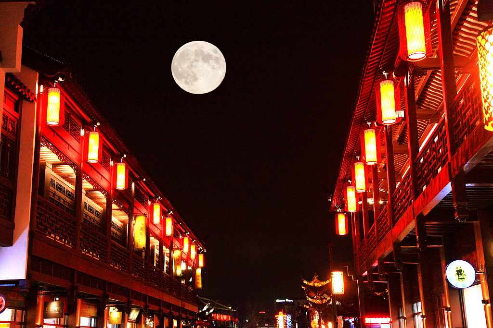
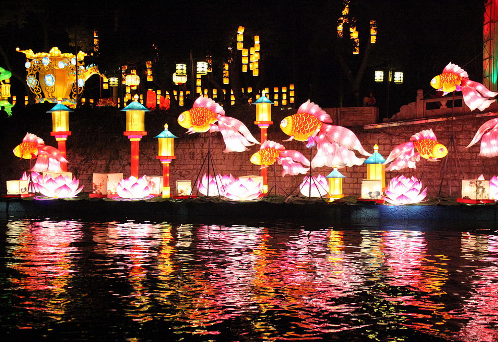
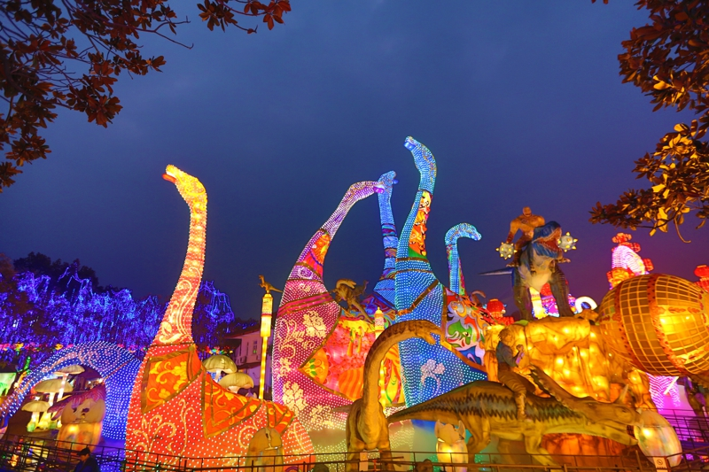
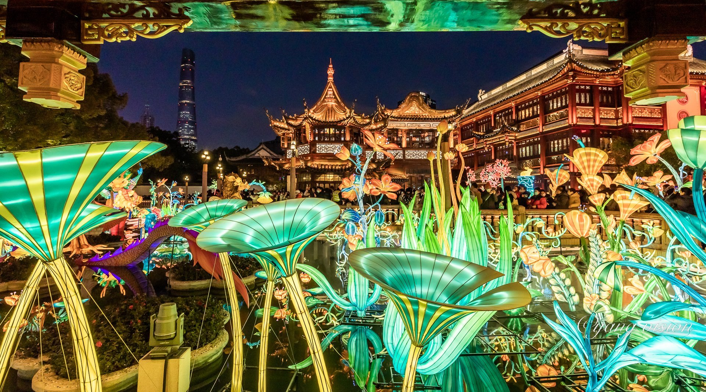

闹元宵·赏花灯

天下第一灯会
“正月十五闹花灯”，灯会是中国人庆祝新春的最高潮。2024年12月，“春节”正式列入联合国教科文组织人类非物质文化遗产代表作名录，泉州花灯等项目参与申报。灯会不仅是花灯手工艺的集中展示舞台，更是集灯谜、舞龙舞狮、地方戏曲于一体的盛大民间狂欢节。
当夜幕降临，数以万计的花灯同时点亮，人们摩肩接踵，穿梭于光影的长廊。在这个夜晚，无论达官贵人还是平民百姓，共享着这份流光溢彩的祥和与浪漫，传承着中华民族对光明、团圆与美好的永恒追求。
中华著名灯会大赏

秦淮灯会 (夫子庙灯会)
举办地：江苏南京。
特色：中国持续时间最长、参与人数最多的民俗灯会。依托夫子庙古建筑群与十里秦淮河的波光潋滟，水陆空立体布展，再现“桨声灯影连十里”的历史盛景。历届灯会均吸引数以百万计的游客观赏。

自贡国际恐龙灯会
举办地：四川自贡。
特色：虽以现代大型彩灯为主，但自贡灯会凭借宏大的体量、精妙绝伦的机械传动与光电技术饮誉海内外。其利用瓷器、玻璃瓶甚至蚕茧等废旧材料扎制花灯的“化腐朽为神奇”之术，堪称一绝。

上海豫园民俗艺术灯会
举办地：上海黄浦。
特色：国家级非遗项目。以中国传统神话（如《山海经》）为主题，将海派文化与传统彩灯完美融合。在繁华的国际大都市中心，通过极具视觉冲击力的巨型国潮花灯，打造出一场东方美学奇境。